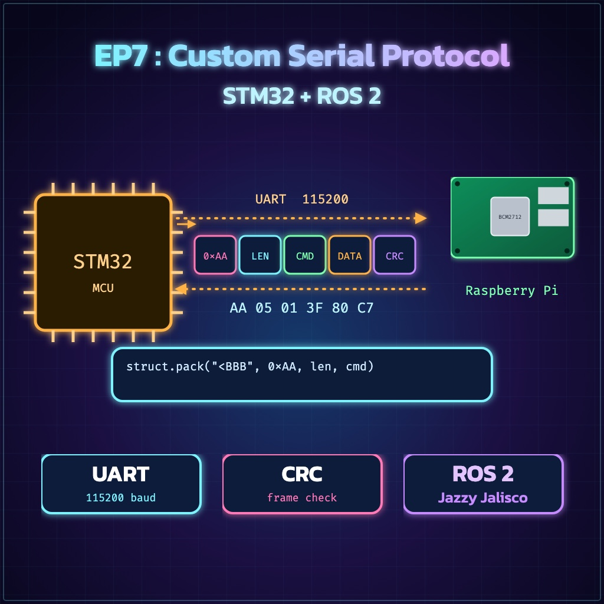
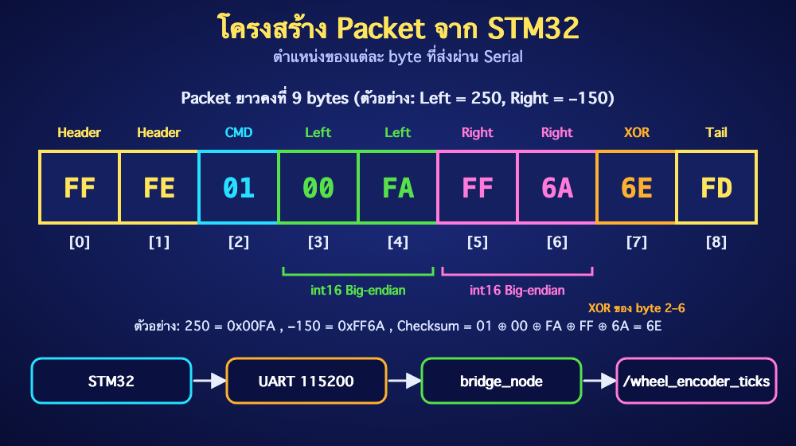

ย้อนกลับ

EP7
Custom Serial Protocol — STM32 ↔ ROS 2
"ROS 2 Jazzy • Packet framing, checksum, resynchronization และ Python bridge ที่ตรวจสอบข้อมูลจริง"
🎯 จุดประสงค์การเรียนรู้
- ออกแบบ Binary Packet ที่แบ่งเขตข้อมูลชัดเจน
- ส่งข้อมูล
int16 จาก STM32 แบบกำหนด Byte Order
- เขียน ROS 2 Node ที่หา Header ใหม่เมื่อข้อมูลหลุดเฟรม
- ตรวจ Checksum ก่อน Publish และวิเคราะห์ปัญหา Serial ได้
1. ภาพรวมระบบ
STM32 อ่าน Encoder/ควบคุม Motor → ส่ง UART → PC หรือ Raspberry Pi อ่าน Serial → ROS 2 Bridge แปลงเป็น Topic
⚠️ Safety: ต่อ GND ร่วมกัน, ใช้ระดับสัญญาณ 3.3 V ให้ตรงกับบอร์ด และตรวจ TX↔RX ก่อนจ่ายไฟ ห้ามนำ 5 V logic เข้าขา STM32 โดยไม่ตรวจ Datasheet
2. กำหนด Packet
| Offset | ชื่อ | ค่า/ขนาด |
|---|
| 0–1 | Header | 0xFF 0xFE |
| 2 | CMD | 0x01 = Encoder |
| 3–4 | Left | int16, Big-endian |
| 5–6 | Right | int16, Big-endian |
| 7 | Checksum | XOR ของ byte 2–6 |
| 8 | Tail | 0xFD |
Packet ยาวคงที่ 9 bytes ตัวอย่างนี้เหมาะกับ Lab หากใช้จริงควรเพิ่ม Length, Sequence, CRC-16 และ Timeout/Failsafe

3. Firmware ฝั่ง STM32
ตัวอย่าง Arduino Core for STM32 ส่งค่าทุก 50 ms (20 Hz):
#include <Arduino.h>
void sendEncoder(int16_t left, int16_t right) {
uint8_t p[9];
p[0] = 0xFF;
p[1] = 0xFE;
p[2] = 0x01;
p[3] = (uint16_t(left) >> 8) & 0xFF;
p[4] = uint16_t(left) & 0xFF;
p[5] = (uint16_t(right) >> 8) & 0xFF;
p[6] = uint16_t(right) & 0xFF;
p[7] = p[2] ^ p[3] ^ p[4] ^ p[5] ^ p[6];
p[8] = 0xFD;
Serial1.write(p, sizeof(p));
}
void setup() {
Serial1.begin(115200);
}
void loop() {
static int16_t left_ticks = 250;
static int16_t right_ticks = -150;
sendEncoder(left_ticks, right_ticks);
delay(50);
}
อธิบาย Code
- Cast เป็น
uint16_t ก่อน shift เพื่อให้การแยก byte ของค่าติดลบชัดเจน
- Big-endian หมายถึงส่ง High byte ก่อน Low byte ฝั่ง Python จึงใช้
>hh
- Checksum ต้องคำนวณและตรวจด้วยกติกาเดียวกันทั้งสองฝั่ง
4. เตรียม Linux และสิทธิ์ Serial
source /opt/ros/jazzy/setup.bash
sudo apt update
sudo apt install -y python3-serial
# เสียบอุปกรณ์แล้วตรวจชื่อพอร์ต
ls -l /dev/ttyUSB* /dev/ttyACM* 2>/dev/null
หาก Permission denied:
sudo usermod -aG dialout $USER
# จากนั้น Sign out แล้ว Sign in ใหม่
อย่าแก้ด้วย sudo chmod 777 /dev/ttyUSB0 เป็นวิธีถาวร เพราะสิทธิ์หายเมื่อเสียบอุปกรณ์ใหม่และเปิดกว้างเกินจำเป็น
5. สร้าง ROS 2 Package
mkdir -p ~/ros2_ws/src
cd ~/ros2_ws/src
ros2 pkg create --build-type ament_python stm32_bridge_pkg \
--dependencies rclpy std_msgs
สร้างไฟล์ ~/ros2_ws/src/stm32_bridge_pkg/stm32_bridge_pkg/bridge_node.py
import struct
import serial
import rclpy
from rclpy.node import Node
from std_msgs.msg import Int32MultiArray
class STM32Bridge(Node):
HEADER = b'\xff\xfe'
PACKET_SIZE = 9
def __init__(self):
super().__init__('stm32_bridge')
self.declare_parameter('port', '/dev/ttyUSB0')
self.declare_parameter('baud', 115200)
port = self.get_parameter('port').value
baud = self.get_parameter('baud').value
self.serial = serial.Serial(port, baud, timeout=0)
self.buffer = bytearray()
self.publisher = self.create_publisher(
Int32MultiArray, 'wheel_encoder_ticks', 10)
self.timer = self.create_timer(0.01, self.read_serial)
self.get_logger().info(f'Opened {port} at {baud} baud')
def read_serial(self):
waiting = self.serial.in_waiting
if waiting:
self.buffer.extend(self.serial.read(waiting))
self.parse_buffer()
def parse_buffer(self):
while True:
start = self.buffer.find(self.HEADER)
if start < 0:
# เก็บ 0xFF สุดท้ายไว้ เผื่อเป็นต้น Header รอบถัดไป
self.buffer[:] = self.buffer[-1:] if self.buffer[-1:] == b'\xff' else b''
return
if start > 0:
del self.buffer[:start]
if len(self.buffer) < self.PACKET_SIZE:
return
packet = bytes(self.buffer[:self.PACKET_SIZE])
if packet[8] != 0xFD:
del self.buffer[0]
continue
checksum = packet[2] ^ packet[3] ^ packet[4] ^ packet[5] ^ packet[6]
if packet[7] != checksum:
self.get_logger().warning('Checksum mismatch')
del self.buffer[0]
continue
if packet[2] == 0x01:
left, right = struct.unpack('>hh', packet[3:7])
msg = Int32MultiArray()
msg.data = [left, right]
self.publisher.publish(msg)
del self.buffer[:self.PACKET_SIZE]
def destroy_node(self):
if self.serial.is_open:
self.serial.close()
super().destroy_node()
def main(args=None):
rclpy.init(args=args)
node = STM32Bridge()
try:
rclpy.spin(node)
except KeyboardInterrupt:
pass
finally:
node.destroy_node()
rclpy.shutdown()
if __name__ == '__main__':
main()
ทำไมต้องใช้ Buffer?
serial.read() อาจคืนข้อมูลไม่ครบหนึ่ง Packet และ Stream อาจเริ่มกลาง Packet ได้ การสะสม byte แล้วค้น Header ช่วย Resynchronize โดยไม่สมมติว่าทุกครั้งจะอ่านได้ 9 byte พอดี
6. ลงทะเบียนคำสั่ง Run
แก้ setup.py:
entry_points={
'console_scripts': [
'bridge_node = stm32_bridge_pkg.bridge_node:main',
],
},
ตรวจว่า package.xml มี dependency ที่คำสั่งสร้าง Package ใส่ให้แล้ว
7. Build, Run และตรวจผล
cd ~/ros2_ws
rosdep install --from-paths src --ignore-src -r -y
colcon build --symlink-install --packages-select stm32_bridge_pkg
source install/setup.bash
ros2 run stm32_bridge_pkg bridge_node \
--ros-args -p port:=/dev/ttyUSB0 -p baud:=115200
Terminal ใหม่:
source /opt/ros/jazzy/setup.bash
source ~/ros2_ws/install/setup.bash
ros2 topic info /wheel_encoder_ticks
ros2 topic echo /wheel_encoder_ticks
✅ Expected Result: ได้ array สองค่า เช่น data: [250, -150] ต่อเนื่องประมาณ 20 Hz และไม่มีคำเตือน Checksum
🧪 LAB 7.1 — ทดสอบความทนทาน
- เปลี่ยน Baud ฝั่ง ROS 2 ให้ผิดและสังเกตอาการ
- คืนค่าให้ตรง แล้วแก้ Firmware ให้ Checksum ผิด 1 byte
- ยืนยันว่า Node ไม่ Publish Packet เสียและ Log ขึ้น
Checksum mismatch
- เพิ่ม Topic
/serial_packet_errors สำหรับนับ Error
เกณฑ์ผ่าน: ระบบกลับมารับ Packet ถูกต้องได้เองหลังเจอข้อมูลเสีย โดยไม่ต้อง Restart Node
⚠️ Common Problems
| อาการ | แนวทางแก้ |
|---|
| Permission denied | เพิ่มผู้ใช้ในกลุ่ม dialout แล้ว Login ใหม่ |
| พอร์ตหาย/สลับชื่อ | ตรวจ dmesg, ls -l /dev/serial/by-id/ และใช้ path แบบ by-id |
| ค่าติดลบเพี้ยน | ตรวจ Signed int16 และ Endianness ให้ตรงกัน |
| Checksum mismatch ต่อเนื่อง | ตรวจ Baud, Ground, สาย, Logic level และกติกา Checksum |
| Topic ไม่มีข้อมูล | ตรวจว่า CMD=0x01, Tail=0xFD และ Node เปิดพอร์ตสำเร็จ |